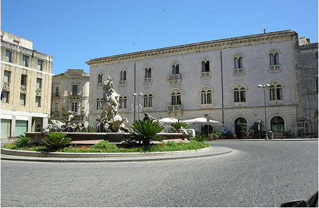
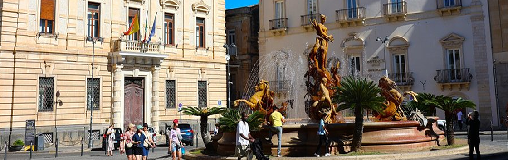
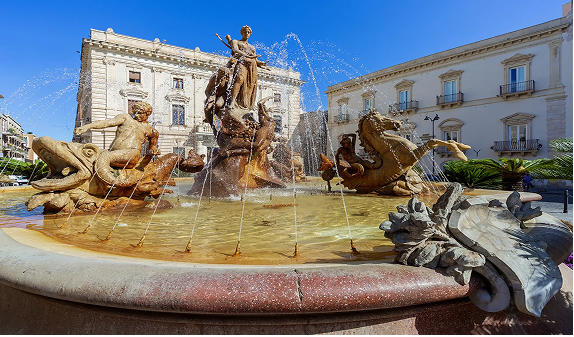
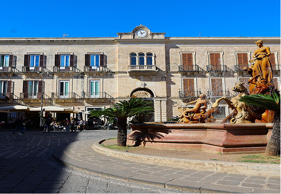

Il cuore pulsante di Ortigia
Piazza Archimede si trova nel centro storico di Ortigia, l’antico quartiere di Siracusa, ed è considerata una delle piazze principali della città. Grazie alla sua posizione centrale, rappresenta un punto di incontro per cittadini e visitatori, che possono godere di un ambiente ricco di storia e di fascino.
La piazza prende il nome dal matematico e inventore Archimede, nativo di Siracusa. Intorno alla piazza si affacciano edifici storici e chiese in stile barocco, caratterizzati da facciate decorate e balconi eleganti. Questi elementi conferiscono a Piazza Archimede un’atmosfera unica, tra storia e cultura.

La fontana della dea Diana
Al centro della piazza si trova la famosa Fontana di Diana, costruita nel 1907, che rappresenta la dea della caccia secondo la mitologia greca.
La fontana è un punto focale della piazza e un luogo molto amato dai visitatori per scattare fotografie e ammirare l’arte in uno spazio pubblico.

Un’ esperienza panoramica
Oggi Piazza Archimede non è solo un luogo storico, ma anche un centro di socialità. Caffè e negozi animano gli spazi pedonali, mentre eventi culturali, mercati e manifestazioni trasformano la piazza in un luogo e frequentato da persone di tutte le età.
Passeggiando per Piazza Archimede, i visitatori possono ammirare scorci pittoreschi sulle strade circostanti di Ortigia e respirare l’atmosfera della Siracusa storica. L’armoniosa combinazione tra architettura barocca, spazi pedonali e monumenti fa della piazza un luogo imperdibile per chi visita la città.
